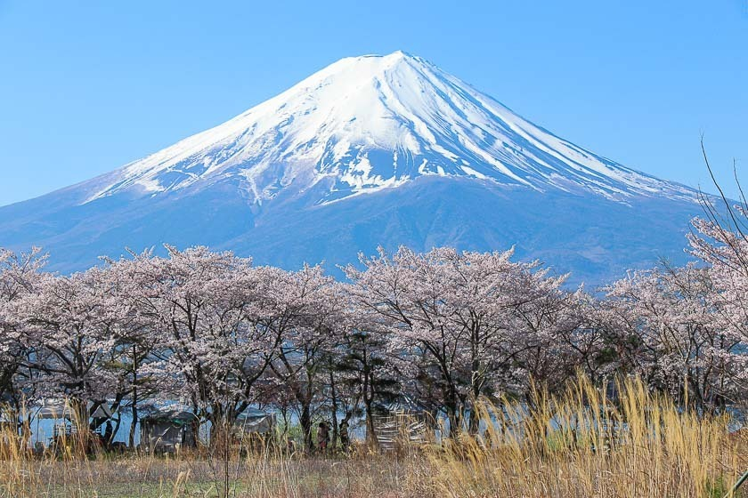
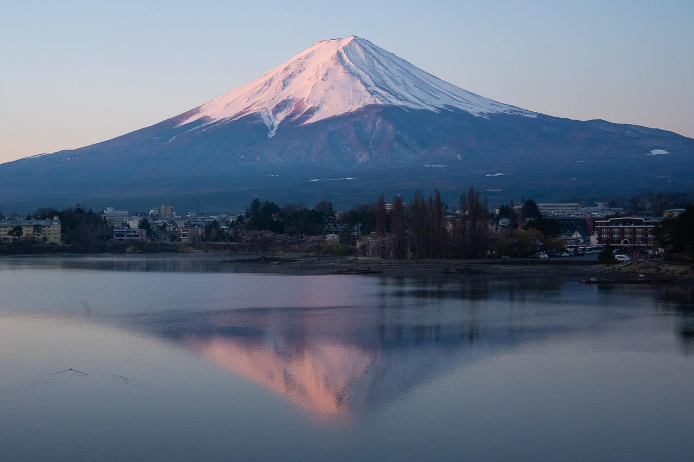

Stop 5: Mt. Fuji
Mount Fuji is an active volcano and the tallest peak in Japan. It is one of the country's most sacred symbols and has inspired artists and travelers for centuries.

Photo 1: A classic view of Mount Fuji framed by spring cherry blossoms.

Photo 2: Mount Fuji perfectly casting a reflection over the calm waters of Lake Kawaguchi.